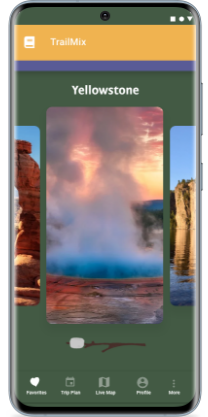

My UX/UI Design Projects





Travel Mobile Challenge
This app was designed to address the need of travelers to locate and experience the hidden gems in destination city with confidence about the authenticity of the experience and purchased goods.


Government Agency Site Redesign
Heavier in the UI design process, this redesign project takes a look into resolving the feeling of lostness often experienced by users visiting the Federal Communications Commission website.